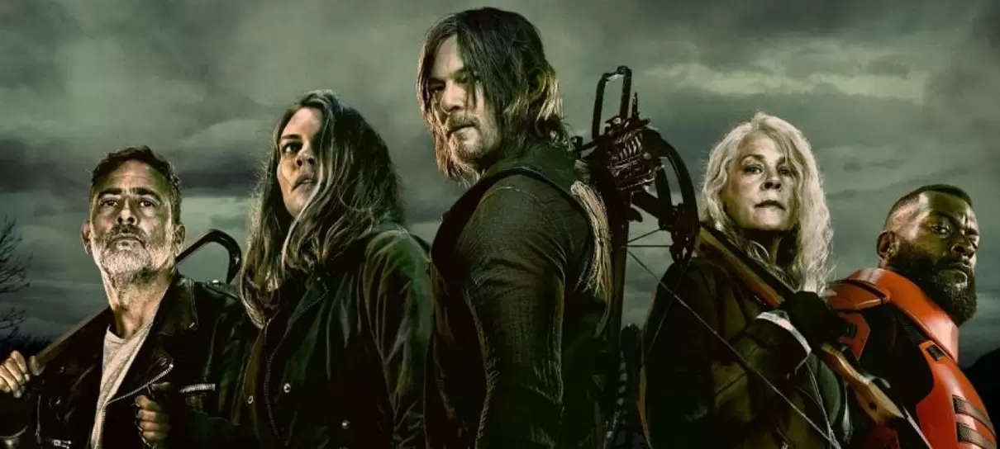

The walking dead

Descrição
- Generos: Terror, Drama, Apocalipse zumbi
- Faixa etária: 16
- Temporadas: 11
- Episódios:177
- Autor: Robert Kirkman, Tony Moore, Charlie Adlard
- Direção: Jolly Dale, Caleb Womble, Paul Gadd, Heather Bellson
- Roteiristas: Frank Darabont (season 1) Glen Mazzara (seasons 2–3) Scott M. Gimple (seasons 4–8) Angela Kang (seasons 9–11)
- Estúdio: AMC
- Distribuidora: AMC Networks, Fox Networks Group, Disney Media and Entertainment Distribution
- Emissora: AMC, FOX
- Streaming: Star+, Disney+(26 de junho de 2024), Netflix